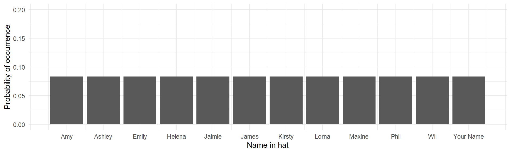
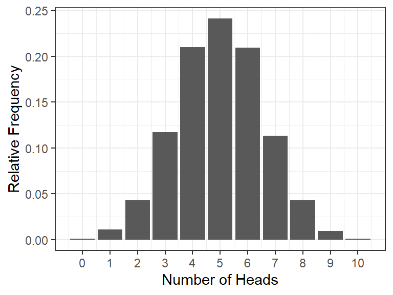
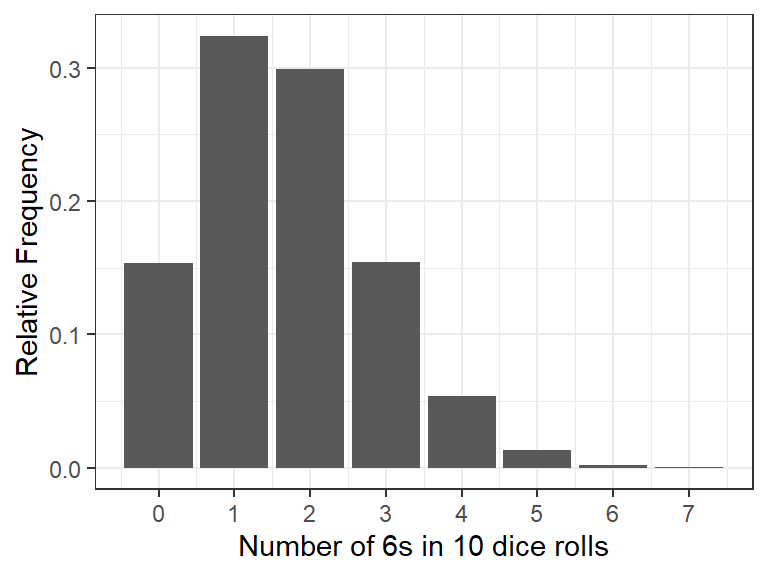
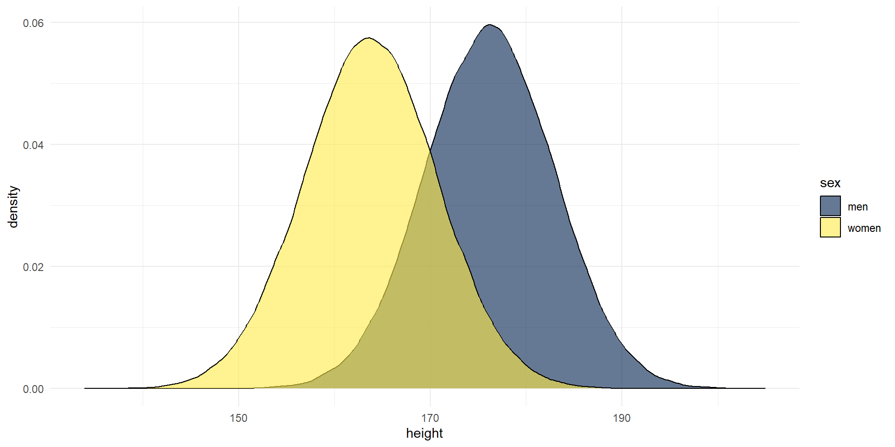
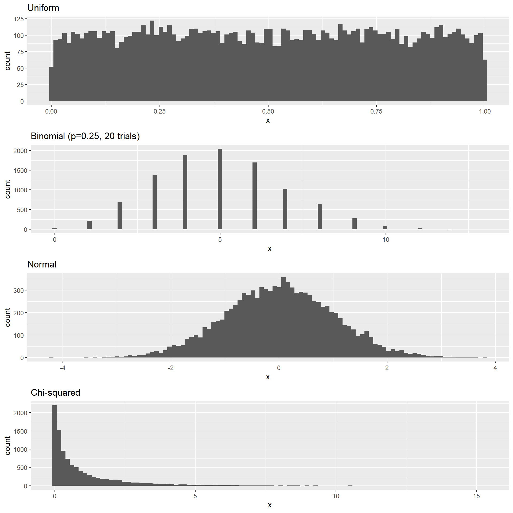

06 Probability & Sampling in R
Julius-Maximilians-University Würzburg
Course: “Biostatistics”
Translational Neuroscience
Probability
We already covered classic probability theory, including conditional probability.
Today, we will go more into depth about different probability distributions.
A probability distribution is similar to a frequency distribution: The difference is that the probability distribution reflects the theory and the frequency distribution the observed data (i.e., frequencies are used to approximate probabilities)
Simulations can be used to get (an approximation of) a probability distribution!
We don’t have to conduct an experiment, e.g., tossing a coin 100x, but can rather simulate it using R!
The Uniform Distribution
In a uniform distribution, each possible outcome has an equal chance of occurring.
If we have a hat with 12 paper slips with names, each name has an equal chance (\(p = \frac{1}{12} \approx .08\)) of being drawn:

The Binomial Distribution
The binomial (“two categories”) distribution is used for discrete data with two possible outcomes (e.g., flipping a coin). It models the number of successes being observed (e.g., heads), given the probability of success (0.5 for fair coins) and the number of observations (flips of a coin, e.g., 10).
How many heads (successes) should we expect and with what probability?
We can simulate 10 coin flips (or dice) each 10.000 times and count the number of heads (out of the 10). We can use this distribution to work out the probability of different outcomes, e.g., getting at least 3 heads (or 6s) out of 10 tosses (dice rolls).


The Normal Distribution
The normal distribution is very common in statistics (i.e., in the real world). It (roughly) reflects the probability of any value occurring for a continuous variable, such as height.

Normal distribution of height
The normal distribution is always symmetrical
=> equal probability of observations above and below the mean.
=> the mean, median, and mode are all equal!
Normal Distribution 2
We can also use simulations to approximate a normal distribution. This simulation shows that increasing the sample size will get closer to a normal distribution:

A simulation of an experiment collecting height data from 5000 participants.
R
Open RStudio and load your Biostats R project. Create a new script called Probability.R.
Distributions
We are starting with exercises about the three distributions we just got know: uniform, binomial, and normal distribution.
Using the Uniform Distribution
We can use runif for a uniform distribution of continuous (numerical) values or
sample for a uniform distribution of discrete (numerical or text) values.
- Draw a random decimal number between 0 and 1
- Draw 100 random decimal numbers between 0 and 10 and calculate their mean.
- Draw 50 random integer numbers between 1 and 10 and calculate their mean.
- Draw who may have the first turn during board game night: Anna, Barbara, Christina, or Dana.
- Produce a random order of all the names of Anna, Barbara, Christina, and Dana.
Using the Binomial Distribution
dbinom(): the density distribution gives you the probability of exactly \(x_i\) successes given the number of trials and the probability of success on a single trial: \(P(X = x_i)\) (e.g., what’s the probability of flipping 8/10 heads with a fair coin?)
pbinom(): the (cumulative) probability distribution gives you the cumulative probability of getting a maximum of \(x_i\) successes: \(P(X \le x_i)\) (e.g., getting 5 or fewer heads out of 10 flips).qbinom(): the quantile function gives you the number of success (x-axis) corresponding to a given cumulative probability: \(X(P = P_i)\) (e.g., A maximum of how many heads do you have to expect if you want at least an event probability of 25%?). This is the inverse function ofpbinom().
Note: Be aware of the difference between success probability \(p\), the probability of the density distribution \(P(X = x_i)\), and the probability of the cumulative probability distribution \(P(X \le x_i)\)

Using the Binomial Distribution 2
Now in R:
- What’s the probability of getting exactly 5 heads on 10 flips?
- What’s the probability of getting 0 to 2 heads on 10 flips?
- What’s the probability of getting at least 8 heads on 10 flips?
Note: The binomial distribution is only symmetrical for \(p = 50\%\).
That’s why “a maximum of 2 heads” (0, 1, or 2) has the same probability as “at least 8 heads” (8, 9, or 10).
Using the Binomial Distribution 3
Now let’s use the quantile function qbinom()!
Imagine a friend wants to bet you on tossing a coin and bets that it will be tails. You suspect she has a coin that is not fair and it will be more likely that it turns up as tails.
Your friend agrees that you can toss the coin 10 times to test it before you have to give your bet.
you want to find out whether the coin is fair and ask yourself: What is the minimum number of heads that is acceptable if it is fair?
We choose a probability so low that it is unlikely to get a result lower than that if the coin was fair. We will use a typical value for statistical significance: 0.05 (or in 5% of cases we will find a lower value by chance if the coin was fair).
In this case, the probability of success is now called prob because p is now used for the probability cut-off we want to set. This is unnecessarily confusing :(
If we run the code, we get a value of 2. This means that 2 heads is the first time that the cumulative probability function reaches at least 5% . Thus, if we get less than two heads out of the ten tosses, we could conclude that the coin is likely biased (there is only a 5% chance that this would happen if the coin was fair). You would probably not bet with your friend!
Note: This is a bad way to test the fairness of a coin (it’s just for illustration of qbinom)! Rather demand that you win at tails (if the coin is fair, your friend shouldn’t mind).
Using the Normal Distribution
For every probability distribution, R provides similar functions starting with d, p, or q. For the normal distribution, those are:
dnorm(): density function, for calculating the density (not probability!) of a specific value. Only useful for plotting.pnorm(): cumulative probability or distribution function, for calculating the probability of getting at least (or at most) a specific value.qnorm(): quantile function, for calculating the specific value associated with a given cumulative probability.
For the next activities, we will use means and SDs of height from the Scottish Health Survey (2008).
Using the Normal Distribution 2
Calculate the probability of meeting a Scottish woman who is as tall or taller than the average Scottish man.
Which function would you use?
Hint: You want to know how likely it is that you get a value as extreme or extremer than a specific value (the average height of men) within the distribution for women.
What we know:
average female height = 163.8, SD = 6.931
average male height = 176.2, SD = 6.748
We want to know “at least as tall as”
We need the pnorm() function. Fill in the values instead of the NULLs.
Note: For continuous distributions, we don’t have to distinguish between “taller than” and “at least as tall”. \(P(X \le x_i) = P(X < x_i)\)! (Because the probability of one specific value like 176.2000000 m is exactly 0)
Also note: The SD of the distribution of males is not relevant for this question.
Using the Normal Distribution 3
Fiona is a very tall Scottish woman (181.12 cm) who will only date men who are as tall or taller than her. What is the probability of Fiona finding a taller man?
What we know:
average female height = 163.8, SD = 6.931
average male height = 176.2, SD = 6.748
We want to know “tall or taller”
Fiona’s height = 181.12
Conclusion: Fiona shrinks her dating pool to roughly a quarter and may thus consider abandoning beauty standards imposed by society. (Same advice for men, of course)
How tall would a Scottish man have to be in order to be in the tallest 5% of the height distribution for Scottish men?
Simulations
As you saw in last lecture, we can also use similar functions (usually starting with r) to simulate data (i.e., to draw samples from probability distributions).
This can be helpful if we don’t know the “ground truth” or want to quantify uncertainty. We can also use simulations to calculate the power of a study.
With simulations, we define the expected “ground truth” (distribution of the population) and generate data from it.
Example: We can use rnorm() to simulate data from a normal distribution with given parameters. Here, we will use means and SDs from the Scottish Health Survey (2008) to visualize two normal distributions:
men <- rnorm(n = 100000, mean = 176.2, sd = 6.748)
women <- rnorm(n = 100000, mean = 163.8, sd = 6.931)
heights <- tibble(men, women) %>%
pivot_longer(names_to = "sex", values_to = "height", men:women)
heights %>% ggplot(aes(x = height, fill = sex)) +
geom_density(alpha = .6) +
scale_fill_viridis_d(option = "E") +
theme_minimal()
We could use these data to visualize how much overlap there is between the two distributions of men and women, or to test how big the difference in height needs to be to become significant etc.
Simulate Different Distributions
It is possible to draw data from different distributions:
nsamples <- 10000
nhistbins <- 100
# uniform distribution
p1 <- tibble(x = runif(nsamples)) %>%
ggplot((aes(x))) + geom_histogram(bins = nhistbins) +
labs(title = "Uniform")
# binomial distribution
p2 <- tibble(x = rbinom(nsamples, 20, 0.25)) %>%
ggplot(aes(x)) + geom_histogram(bins = nhistbins) +
labs(title = "Binomial (p=0.25, 20 trials)")
# normal distribution
p3 <- tibble(x = rnorm(nsamples)) %>%
ggplot(aes(x)) + geom_histogram(bins = nhistbins) +
labs(title = "Normal")
# Chi-squared distribution
p4 <- tibble(x = rchisq(nsamples, df=1)) %>%
ggplot(aes(x)) + geom_histogram(bins = nhistbins) +
labs(title = "Chi-squared")
cowplot::plot_grid(p1, p2, p3, p4, ncol = 1)
Simulate a Fake Dataset
Let’s simulate data of 120 participants of different heights and genders flipping a coin. To do so, we need to know how to simulate a) heights, b) flip a coin, and c) assign genders.
Simulate coin flips:
(Instead of drawing from a probability distribution function that starts with an r, e.g. rnorm(), we use sample(), which randomly (uniformly) draws from values you determine. We need to set replace=TRUE)
We could of course use similar code to simulate gender or the like.
But if we want to predetermine which genders we want to collect data from (i.e. same number in each gender group), we can also use the function rep(). This function will simply repeat an observation for a number of rows:
Determine participant numbers and combining everything into one dataframe:
sim_data <- tibble(
participant_number = 1:120,
gender = rep(x = c("man", "woman", "nonbinary"), each = 40),
height = rnorm(120, mean = 170, sd = 10),
coin_flip = sample(c("Head", "Tail"), 120, replace=TRUE)
)
# or if you have run all the code before, you could also use the objects you have already in your Environment:
# sim_data <- tibble(participant_number = 1:120, genders, heights, coin_flips)Resampling
If we wanted to do a Monte Carlo Simulation, we could use the code from the last slide and put the simulation into a for loop. Inside the for loop, we would also calculate some value of interest (one estimate per subsample, such as the mean).
Resampling 2
But for now, let’s look at the Bootstrap. Remember that we usually use real data for bootstrapping and draw samples with replacement of the same size as the original dataset. We can use this to quantify uncertainty, such as with the Standard Error of the Mean (SEM) or Confidence Intervals.
Let’s say we have a very small sample of “sweets consumed”. We don’t know the underlying distribution. We make up a dataset, but let’s pretend it is our real data:
Resampling 3
Let’s resample 1000 times. To get the sampling distributions of the means, we have to save each mean of each iteration:
set.seed(8465123)
iterations <- 1000
# initialize empty matrices
mean_bootstrap_10 <- matrix(NA, nrow = iterations, ncol = 1)
mean_bootstrap_20 <- matrix(NA, nrow = iterations, ncol = 1)
for (i in 1:iterations) {
# draw exactly the same amount of datapoints as in the original dataset, but with replacement
bootstrap_data_10 <- sample_n(data_10, 10, replace=TRUE)
bootstrap_data_20 <- sample_n(data_20, 20, replace=TRUE)
# calculate the mean for each of the subsamples, put it into matrix in subsequent rows
mean_bootstrap_10[i,1] <- mean(bootstrap_data_10$sweets)
mean_bootstrap_20[i,1] <- mean(bootstrap_data_20$sweets)
}
# calculate the SEMs
sd(mean_bootstrap_10)[1] 0.4948013[1] 0.4646242We can conclude that the SEM is smaller with a larger sample size, which means we can be more certain about our estimate! (We already knew this from the \(\sqrt{n}\) in the denominator of the SE formular but it’s nice to see it confirmed.)
Thanks!
Learning objectives:
Understand that there are different types of data that follow different kinds of distributions.
Be able to use these distributions to calculate the probability of particular outcomes.
- This will be the foundation of statistical significance testing (testing whether some probability is \(\le 5\%\))!
Next:
Hypothesis testing! Finally! :D